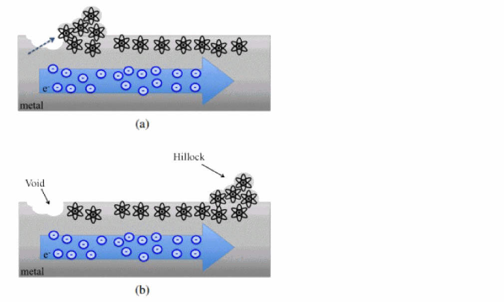

Cell EM Analysis and ECO - Overview
The reliability of silicon is addressed by using a variety of design measures, which include the type of material used. As the structural dimensions of electronic devices and their interconnects are downscaled, the factors that reduce reliability need to be considered. In addition, the material migration process that occurs in electrical devices and interconnects has a significant impact during the IC design and development phase.
The material migration, also known as electron migration, is a term that describes various forced material transport processes in solid bodies. When high density current passes through a thin metal wire, the high energy electrons exert forces on atoms causing them to migrate. The process of electromigration can drastically reduce the lifetime of a chip by increasing the resistivity of a metal wire or creating a short circuit between adjacent lines.
The effect of electromigration is illustrated in the figure below.

This chapter explains the Cell electromigration (EM) constructs that are used in Tempus Static Timing Analysis (STA) and the ECO flow, which can help IC designers to analyze a design, prevent violations, and prepare a robust design having higher reliability.
The Tempus software mainly covers the cell-level EM analysis in STA and fixing as part of the timing ECO flow. Both Cell EM analysis and ECO provide a method to fix the standard cell level electromigration violations. The standard cell level electromigration violations can cause degradation in cell reliability, if the frequency is higher than the pre-defined limit in the .lib file.
To determine the impact of Cell electromigration in STA, the Tempus software considers the following two parameters:
This document assumes that the foundry or IP provider may supply the .lib files containing electromigration constructs for standard cells (refer Required Inputs for Cell EM Analysis). The scope of EM analysis in the context of STA is related to the standard cells for which appropriate constructs are defined or are available in the .lib file. Also, the designers can configure appropriate toggle rates and define activities in Tempus to simulate the possible behavior of a design in the real world. Using these parameters, Tempus can perform analysis, and Tempus ECO can fix cell level EM violations.
Terms Used in this Chapter
Switching Activity (SA)
The set_switching_activity command -activity parameter specifies the number of times the net, pin, or port switches in a clock cycle.
If the activity is set to 0.5, the switching activity happens once for every two clock cycles. If the activity is set to 2.0, the switching activity happens two times per clock cycle.
Transition Density/Toggle Count/Toggle Rate (TD)
Transition density specifies the number of transitions per second.
TD = (number of toggles)*(clock-frequency)
max_transition
set_max_transition_per_freq /1D library Freq Slew Table.
max_transition values in the timing libraries.
max_capacitance
set_max_cap_per_freq/1D library Freq Cap Table
Transition Frequency (FR)
Return to top